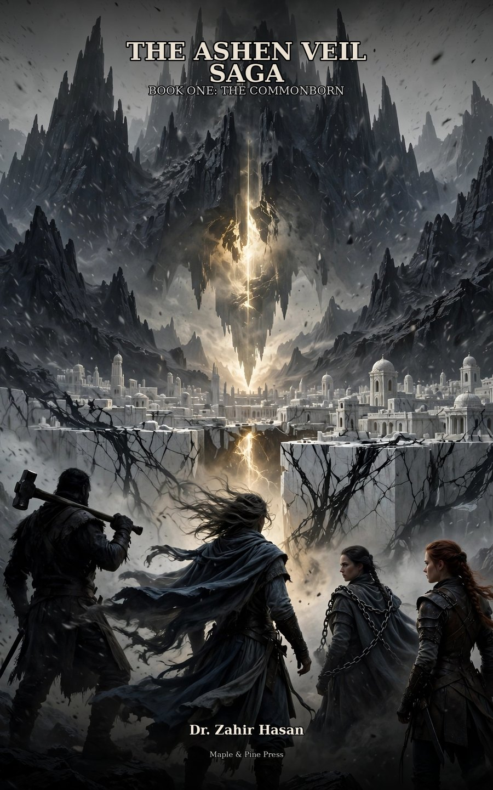

Three hundred years ago, twenty-four people talked a mountain range into standing up. It cost each of them a memory, and the stone chose which one.
At a quarter past four on a winter morning, the wind over Kest stops. Not drops — stops. Fires burn without giving heat. Breath stops showing. And the iron coming down out of the northern hills is the wrong iron: it is not for making things, it is for taking the permission out of them.
Silas of Lowford is a village smith who can hear what stone remembers. His younger brother Jonah can feel a storm before it has decided to be one. Neither of them is any use in a rank of soldiers — which is precisely the argument Silas makes when the fort at Northwatch, eleven hundred people and a captain who has never once failed to send a return, goes nineteen days in silence, and the Reeve of Kest sits weighing whether to send five hundred men or nobody at all.
Send two, Silas tells him. Give us four days and a mule.
What waits in the north is the thing their ancestors buried and mistook for a finished job. And behind them, in a city that keeps flawless accounts of everything except itself, a ledger-keeper named Vaskell Ordan has been quietly leaning on Kest for years — and the stone has been the only thing keeping count.
The warning is carved over the gate of the White City, worn smooth by generations who recited it at midwinter without ever knowing it was a set of instructions:
Let no child go north unless his hands know stone and his lungs know sky.
Book One of The Ashen Veil Saga. Includes a map of Vyr Kallan, the White City.
Ebook · Maple & Pine Press
- Author
- Dr. Zahir Hasan
- Publisher
- Maple & Pine Press, Tokyo
- Series
- The Ashen Veil Saga · Book 1
- List
- Fantasy & Science Fiction